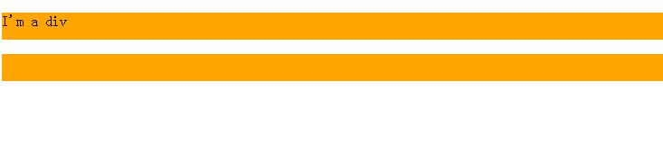
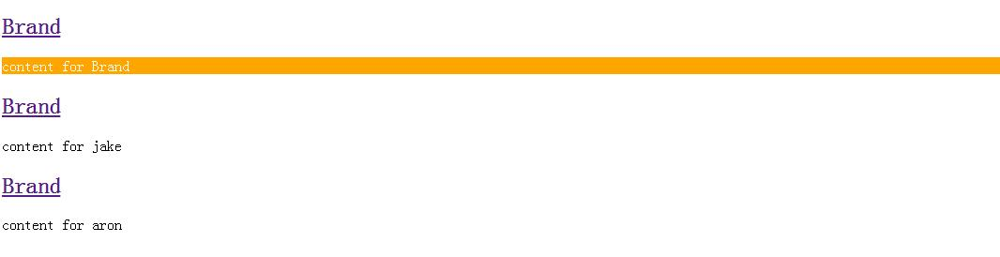

There are 4 kinds of structured pseudo class selectors in CSS, ":root", ":not", ":empty" and ":target".
1. ":root"
We should know that "root" is "html". It means the following codes have the same function:
:root {background:orange}
html {background:orange;}
And ":root" has another function: we can achieve some CSS Hacks by using it, because ":root" is supported by IE9+, now let's see an example.
<!--[if lte IE 8]>
<style>
#demo{filter:progid:DXImageTransform.Microsoft.BasicImage(rotation=3);}
</style>
<![endif]-->
<style>
#demo{
width: 300px;height: 200px;background-color: #FF80C0;margin: 200px;
-moz-transform:translate(-226px,226px) rotate(270deg);
-webkit-transform:translate(-226px,226px) rotate(270deg);
-ms-transform:translate(-226px,226px) rotate(270deg);
-o-transform:translate(-226px,226px) rotate(270deg);
}
</style>
<<div id="demo">
A test
</div>
In this example, I want to achieve a function that a layer rotate 270deg and all kinds of IE versions can fully compatible. Do you think it's all right? ->.-> Haaaaa, no! The IE9 doesn't work like we think. Because IE9 will use both "filter" and "-ms-transform", so in this situation the block will rotate twice, which will cause the rotation angle to be incorrect. So we should add some codes:
:root #demo{filter:progid:DXImageTransform.Microsoft.BasicImage(rotation=0);}
The added codes means we should delete the rotation in IE9, because "filter" can only be supported by IE9-, and ":root" can only be supported by IE9+, when we put these two factors together, the codes can only be supported by IE9. It isn't equal to "[if IE 9]", you can try it.
2. ":not"
From its name we could understand the function: not choose some elements. Easy~ So, let's just see an example, I just want to choose all inputs except submit button.
input:not([type="submit"]){
border:1px solid red;
}
3. ":empty"
It's used to select elements without any content. It means no content, even a space. For Instance, if we want to hide "div" which has no content.
div{
background: orange;
min-height: 30px;
}
div:empty{
display: none;
}
<div>I'm a div</div>
<div> </div>
<div></div>
Let's see it in a picture:

We can only see two orange "div"s, because the third one is empty, and the second one has a space.
Be careful! If the content of "div" is empty, but we use "::before" or "::after" and set some value to its "content", do you think the ":empty" pseudo class could work well? Yes! You can try it, or just
click here to see an example(Done by Xinxu Zhang).
4. ":target"
It is used to match the target element of a symbol for URL. Let's see an example.
#brand{
display: none;
}
#brand:target{ /*:target means the element which id="brand"*/
display:block;
}
<h2><a href="#brand">Brand</a></h2>
<div id="brand">
content for Brand
</div>
You can copy and run the codes above, when you click the "Brand" link, a "div" will show. What's more, let's see another example with more than one URL.
#brand:target {
background: orange;
color: #fff;
}
#jake:target {
background: blue;
color: #fff;
}
#aron:target {
background: red;
color: #fff;
}
<h2><a href="#brand">Brand</a></h2>
<div class="menuSection" id="brand">
content for Brand
</div>
<h2><a href="#jake">Brand</a></h2>
<div class="menuSection" id="jake">
content for jake
</div>
<h2><a href="#aron">Brand</a></h2>
<div class="menuSection" id="aron">
content for aron
</div>
Let's see it's effect:

We can click links one by one, and you will see "div"s have different background color.
(That's all)